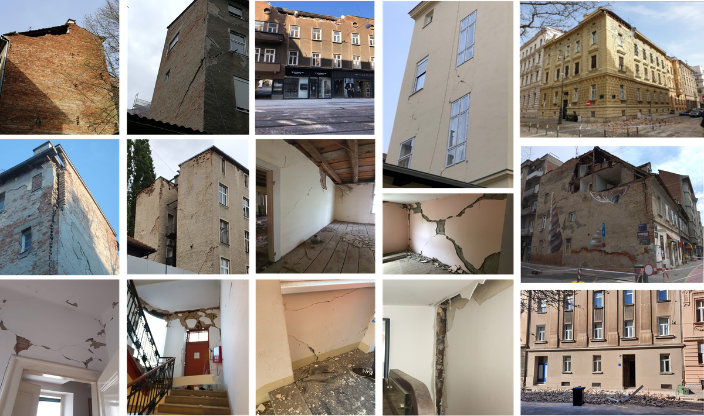
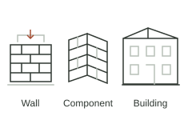
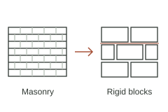
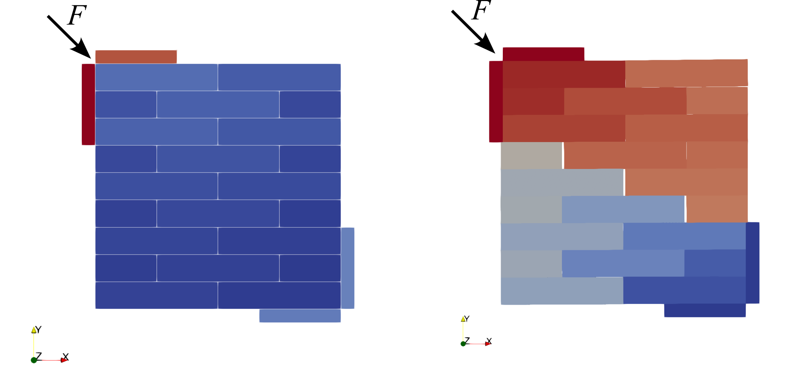
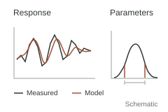
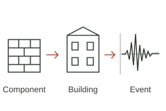
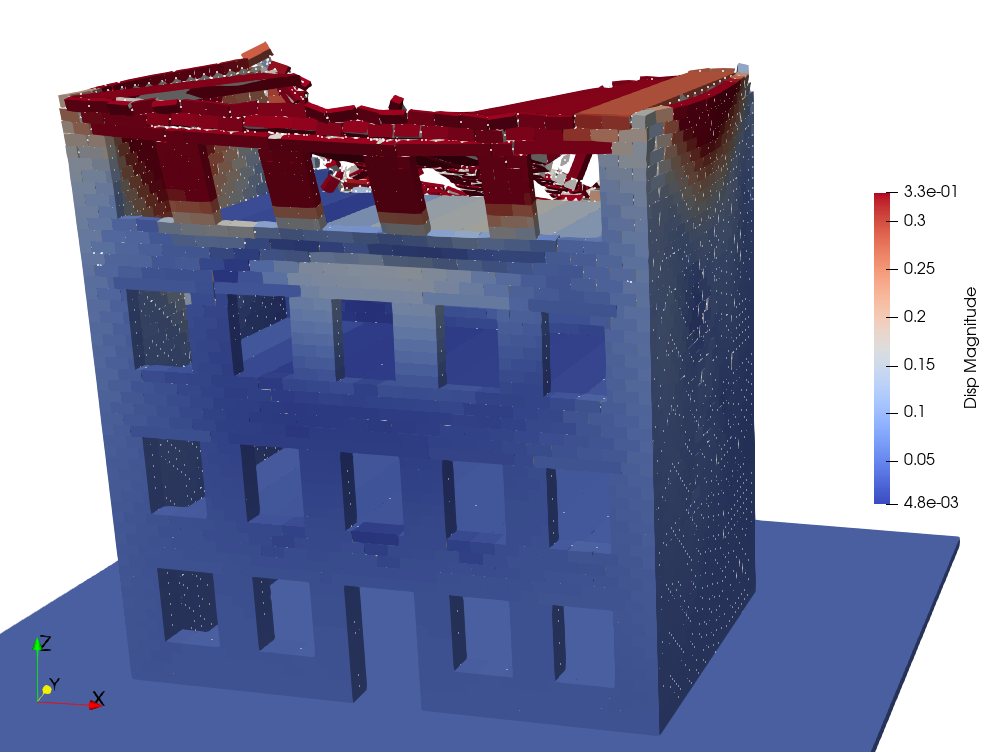
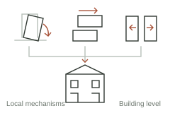

Turning a wall into blocks
There is no validated, transferable way to simplify brick-and-mortar walls into rigid blocks — existing discretisation choices stay heuristic, and sensitive to block size and pattern.
Research
From damage observed in Zagreb to models of masonry behaviour and the probability of future damage.
The starting point / Zagreb
Cracks, separated walls and local collapses are different parts of a building's response to an earthquake.
The CCEE damage assessment photographs document these effects in downtown Zagreb. They bring the research question into focus: how can the movement and interaction of masonry blocks help explain damage at the scale of a building?
FragMENTS builds on the Phase XI study in Zagreb to connect local failure mechanisms with seismic fragility assessment, including the response of previously damaged buildings.
Explore the research origins ↗
The problem
To connect observed damage with seismic fragility, the project addresses three linked modelling challenges: how to represent masonry, calibrate its contacts and capture interacting failure mechanisms.
There is no validated, transferable way to simplify brick-and-mortar walls into rigid blocks — existing discretisation choices stay heuristic, and sensitive to block size and pattern.
How blocks grip, slide and separate under dynamic loading is usually tuned ad hoc, not calibrated systematically across scales and loading conditions.
In-plane and out-of-plane failure are typically assessed separately, and pre-existing earthquake damage is rarely built into the starting state of a fragility analysis.
Research
Three work packages turn these questions into a research programme: build reference models, calibrate and validate their behaviour, then derive mechanism-based fragility relationships.

Review tests and select representative masonry cases.

From brick–mortar assemblies to equivalent rigid blocks.

Automate geometry and reproducible LMGC90 inputs.

Mechanically consistent, simulation-ready models.
Planned deliverable · WP1
A reproducible NSCD modelling framework with homogenised rigid-block discretisation and simulation-ready reference models.
To WP2 · reference models

Component- and building-scale calibration targets.

Evolutionary algorithms and sensitivity analysis.

Component, building and event response, including damaged states.
Planned deliverable · WP2
A calibrated and validated contact-parameter domain, uncertainty bounds and a documented multiscale validation protocol.
To WP3 · validated models & uncertainty

Coupled in-plane and out-of-plane failure mechanisms.

Multiple-stripe analysis of intact and previously damaged models.

Combine critical local mechanisms into a building-level indicator.
Planned deliverable · WP3
Mechanism-based, damage-conditioned fragility functions and a reproducible NSCD-to-fragility workflow with a building-level life-safety indicator.
Building-level seismic assessment
Model images: Phase XI study, the research preceding FragMENTS. Line diagrams are schematic illustrations, not project results.
NSCD · Non-smooth contact dynamics FCZM · Frictional cohesive zone model EDP · Engineering demand parameter
The work packages overlap; model development, validation and fragility assessment inform one another.
WP1
WP2
WP3
Grounded in real buildings
The framework will be tested against measured behaviour at component, building and earthquake-event scales.
Laboratory shear- and diagonal-compression tests from the CCEE–EPFL experimental campaign, capturing cracking patterns and stiffness degradation.
A full-scale shake-table test on a historic masonry building, carried out jointly with EPFL, providing global dynamic properties and drift patterns.
Vibration measurements from real buildings before and after the 2020 Zagreb earthquake, compared against the damage that was actually observed.
Previously damaged buildings
The project introduces damage-conditioned initial states to assess how pre-existing damage affects a building's residual capacity and its fragility under subsequent seismic loading.